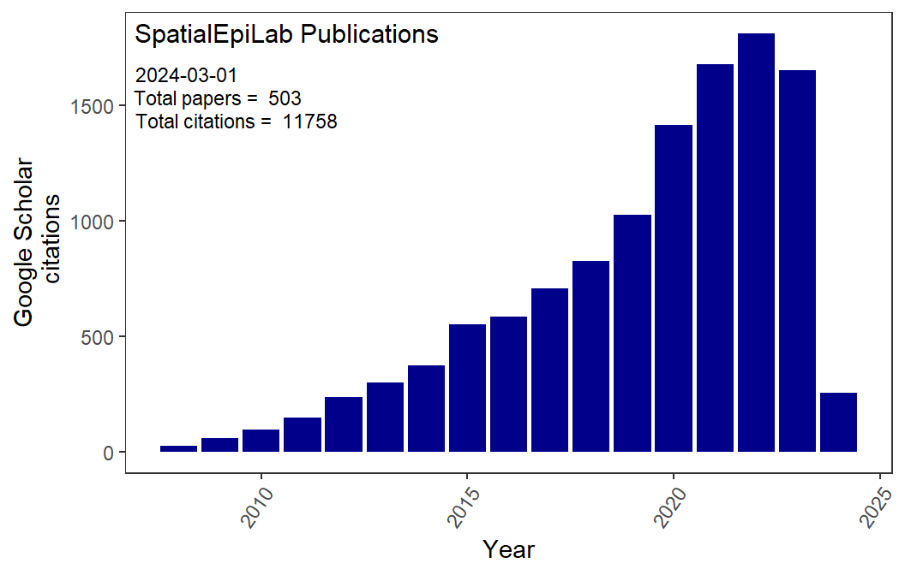

SpatialEpiLab Publications
2024
| Title | Journal | Authors |
|---|---|---|
| Modelling Nonlinear Responses of a Desert Rodent Species to Environmental Change with Hierarchical Dynamic Generalized Additive Models | Ecological Modelling | K Karunarathna, K Wells, NJ Clark |
| The Influence of Environment on Mosquito Feeding Patterns: a Meta-Analysis of” Universal” Dna Diet Studies in a Global Context | Biorxiv | R ORorke, M Lee, NJ Clark, et al |
| Identifying the Potential for Ecological Rehabilitation of Landfills in Queensland: a Spatial Analysis | Australasian J of Environmental Management | VR Chulliparambil, H Shearer, J Cortes-Ramirez, et al |
| Prevalence of Pathogens Important to Human and Companion Animal Health in an Urban Unowned Cat Population | Wildlife Research | T Michaelian, L Harriott, M Gentle, et al |
2023
| Title | Journal | Authors |
|---|---|---|
| Japanese Encephalitis Emergence in Australia: The Potential Population at Risk | Clinical Infectious Diseases | L Yakob, W Hu, FD Frentiu, et al |
| The Association Between Air Pollutants, Meteorological Factors and Tuberculosis Cases in Beijing, China: a Seven-Year Time Series Study | Environmental Research | S Sun, Q Chang, J He, et al |
| using Ecological Niche Modeling to Predict the Potential Distribution of Scrub Typhus in Fujian Province, China | Parasites & Vectors | X Li, X Wei, W Yin, et al |
| Global Patterns of Middle East Respiratory Syndrome Coronavirus (Mers-Cov) Prevalence and Seroprevalence in Camels: a Systematic Review and Meta-Analysis | One Health | MM Islam, H Khanom, E Farag, et al |
| Spatiotemporal Dynamics and Environmental Determinants of Scrub Typhus in Anhui Province, China, 2010–2020 | Scientific Reports | X Wei, J He, W Yin, et al |
| Near-Infrared Spectroscopy and Machine Learning Algorithms for Rapid and Non-Invasive Detection of Trichuris | Plos Neglected Tropical Diseases | TN Kariyawasam, S Ciocchetta, P Visendi, et al |
| Nasal Microbiota Profiles in Shelter Dogs with Dermatological Conditions Carrying Methicillin-Resistant and Methicillin-Sensitive Staphylococcus Species | Scientific Reports | S Horsman, E Meler, D Mikkelsen, et al |
| Molecular Detection of Tetracycline-Resistant Genes in Multi-Drug-Resistant Escherichia Coli Isolated from Broiler Meat in Bangladesh | Antibiotics | GS Alam, MM Hassan, M Ahaduzzaman, et al |
| The One Health Epidemiology of Avian Influenza Infection in Bangladesh: Lessons Learned from the Past 15 Years | Transboundary and Emerging Diseases | MM Hassan, P Dutta, MM Islam, et al |
| Associations Between Canine Hookworm Infection and Dog Owners Awareness, Perception, and Behaviour: a Cross Sectional Study in Brisbane, Queensland, 2019 2020 | Zoonoses and Public Health | K Owada, S Abdullah, N Clark, et al |
| Developing the Monitoring and Evaluation Framework for ’australia’s Antimicrobial Resistance Strategy: 2020 and Beyond’using a One Health Approach | Population Medicine | L Hall, S Lawler, T Comans, et al |
| Perceptions of Livestock Value Chain Actors (Vcas) on the Risk of Acquiring Zoonotic Diseases from their Livestock in the Central Dry Zone of Myanmar | Bmc Public Health | TTZ Win, A Campbell, RJ Soares Magalhaes, et al |
| Cryptic Marine Barriers to Gene Flow in a Vulnerable Coastal Species, the Dugong (Dugong Dugon) | Marine Mammal Science | AM McGowan, JM Lanyon, N Clark, et al |
| Direct and Indirect Viral Associations Predict Coexistence in Wild Plant Virus Communities | Current Biology | A Norberg, H Susi, S Sallinen, et al |
| using a Gradient Boosted Model for Case Ascertainment from Free-Text Veterinary Records | Preventive Veterinary Medicine | U Kennedy, M Paterson, N Clark |
| Modelling Modifiable Factors Associated with the Probability of Human Rabies Deaths among Self-Reported Victims of Dog Bites in Abuja, Nigeria | Plos Neglected Tropical Diseases | PP Mshelbwala, R J. Soares Magalhães, JS Weese, et al |
| Epidemiological Insights into the Burden of Feline Upper Respiratory Tract Infections in Queensland Rspca Shelters | Australian Veterinary J | U Kennedy, M Paterson, N Clark |
| using Joint Species Distribution Models to Improve Predictions of Co-Infection in Veterinary Epidemiology | Geovet | F Powell-Romero, K Wells, N Clark |
| Identification of Antimicrobial Resistance in Faecal Microbes from Wild Dugongs (Dugong Dugon). | Aquatic Mammals | AM McGowan, JM Seddon, JM Lanyon, et al |
| Forecasting Rodent Population Dynamics and Community Transitions with Dynamic Nonlinear Models | Ecoevorxiv | NJ Clark, SKM Ernest, H Senyondo, et al |
| Developing a New Technology for Demonstrating Environmental Sustainability in the Australian Grassfed Beef Industry | Frontiers in Sustainable Food Systems | S Sarwar, H Ross, S Bommel, et al |
| Human Exposure to Bats, Rodents and Monkeys in Bangladesh | Ecohealth | IS Shanta, SP Luby, K Hossain, et al |
| Rabies in a Postpandemic World: Resilient Reservoirs, Redoubtable Riposte, Recurrent Roadblocks, and Resolute Recidivism | Animal Diseases | CE Rupprecht, PP Mshelbwala, RG Reeves, et al |
| Epidemiology of Canine-Mediated Rabies in Nigeria | The University of Queensland | P Mshelbwala |
| Estimating Spatial Disease Rates using Health Statistics without Geographic Identifiers | Geojournal | J Cortes-Ramirez, JD Wilches-Vega, RN Michael, et al |
| Gis to Identify the Value of Ecological Rehabilitation of Landfills | VR Chulliparambil, H Shearer, T Matthews, et al | |
| Analysis of the Spatiotemporal Trends of Covid-19 Hospitalizations and Air Pollution Levels in New York after the 2023 Quebec Wildfires | Available at Ssrn | J Cortes-Ramirez, V Singh, J Wang, et al |
| Mapping the Risk of Respiratory Infections using Suburban District Areas in a Large City in Colombia | Bmc Public Health | J Cortes-Ramirez, M Gatton, JD Wilches-Vega, et al |
| R08. 2 Integration of Spatial and Network Analysis to Undercover Community Exposure to Zoonotic Vector-Borne Diseases: The Example of Ross River Virus During the Covid19 … | Geovet | T Proboste, D Bista, S Arora, et al |
| The Sheltering of Unwanted Cows in India | Cattle Welfare in Dairy and Beef Systems: a New Approach to Global Issues … | A Sharma, U Kennedy, CJC Phillips |
| Investigation on Key Aspects of Mating Biology in the Mosquito Aedes Koreicus | Medical and Veterinary Entomology | S Ciocchetta, FD Frentiu, F Montarsi, et al |
| Machine Learning and Detection of Trichuris Muris in Mice | The University of Queensland | T Kariyawasam, M Lord, S Ciocchetta |
| Identification of Visible and Near-Infrared Signature Peaks for Arboviruses and Plasmodium | Biorxiv | B Goh, RJ Soares Magalhaes, S Ciocchetta, et al |
| Investigation on Key Aspects of Mating Biology in the Mosquito | S Ciocchetta, FD Frentiu, F Montarsi, et al |
2022
| Title | Journal | Authors |
|---|---|---|
| Anaemia in Women of Reproductive Age in Low-and Middle-Income Countries: Progress Towards the 2025 Global Nutrition Target | Bulletin of the World Health Organization | MM Hasan, RJS Magalhaes, SP Garnett, et al |
| Knowledge, Attitudes, and Common Practices of Livestock and Poultry Veterinary Practitioners Regarding the Amu and Amr in Bangladesh | Antibiotics | M Kalam, M Rahman, M Alim, et al |
| Geographical and Socioeconomic Inequalities in the Double Burden of Malnutrition among Women in Southeast Asia: a Population-Based Study | The Lancet Regional Health-Southeast Asia | T Biswas, N Townsend, R Magalhaes, et al |
| Epidemiological Characteristics and Spatiotemporal Patterns of Scrub Typhus in Fujian Province During 2012–2020 | Plos Neglected Tropical Diseases | L Qian, Y Wang, X Wei, et al |
| The Effects of Oclacitinib Treatment on Antimicrobial Usage in Allergic Dogs in Primary Practice: An Australia Wide Case-Control Study | Bmc Veterinary Research | H Rynhoud, C Croton, G Henry, et al |
| Epidemiological Profile of a Human Hepatitis e Virus Outbreak in 2018, Chattogram, Bangladesh | Tropical Medicine and Infectious Disease | K Owada, J Sarkar, M Rahman, et al |
| Spatiotemporal Heterogeneity and Determinants of Canine Rabies Evidence at Local Government Area Level in Nigeria: Implications for Rabies Prevention and Control | One Health | PP Mshelbwala, JS Weese, NJ Clark, et al |
| Near-Term Forecasting of Companion Animal Tick Paralysis Incidence: An Iterative Ensemble Model | Plos Computational Biology | NJ Clark, T Proboste, G Weerasinghe, et al |
| Effects of Long-Term Ambient Air Pollution Exposure on Township-Level Pulmonary Tuberculosis Notification Rates During 2005–2017 in Ningxia, China | Environmental Pollution | I Popovic, RJS Magalhães, Y Yang, et al |
| Toxoplasma Gondii Infection is Associated with Low Birth Weight: Findings from an Observational Study among Rural Bangladeshi Women | Pathogens | I Parvin, SK Das, S Ahmed, et al |
| Exploring the Determinants of Influenza a/H7n9 Control Intervention Efficacy in China: Disentangling the Effect of the “1110” Policy and Poultry Vaccination | Transboundary and Emerging Diseases | Z Yi, G Lu, S Chaojian, et al |
| Prevalence and Diversity of Gastrointestinal Parasites in Free‐ranging Rhesus Macaques (Macaca Mulatta) in Different Land Gradients of Bangladesh | American J of Primatology | S Islam, MK Rahman, MH Uddin, et al |
| Profiling Risk Factors for Household and Community Spatiotemporal Clusters of q Fever Notifications in Queensland Between 2002 and 2017 | Pathogens | T Proboste, NJ Clark, S Tozer, et al |
| a Cross‐sectional Survey of Risk Factors for the Presence of Coxiella Burnetii in Australian Commercial Dairy Goat Farms | Australian Veterinary J | KW Hou, AK Wiethoelter, MA Stevenson, et al |
| Forecasting Scrub Typhus Cases in Eight High-Risk Counties in China: Evaluation of Time-Series Model Performance | Frontiers in Environmental Science | J He, X Wei, W Yin, et al |
| Co-Effects of Global Climatic Dynamics and Local Climatic Factors on Scrub Typhus in Mainland China Based on a Nine-Year Time-Frequency Analysis | One Health | J He, Y Wang, P Liu, et al |
| Research and Innovation Opportunities to Improve Epidemiological Knowledge and Control of Environmentally Driven Zoonoses | Annals of Global Health | T Proboste, A James, A Charette-Castonguay, et al |
| Impact of a 5-Year Mass Drug Administration Programme for Soil-Transmitted Helminthiases on the Spatial Distribution of Childhood Anaemia in Burundi from 2007 to 2011 | Tropical Medicine and Infectious Disease | M Assoum, G Ortu, MG Basáñez, et al |
| Spatial Epidemiology of Highly Pathogenic Avian Influenza Subtype H5n6 in Gyeonggi Province, South Korea, 2016–2017 | Transboundary and Emerging Diseases | JS Lim, RJ Soares Magalhães, S Chakma, et al |
| How can We Compare Multispecies Livestock Rearing Households?–an Analysis of the Impact of Health and Production Parameters on Multispecies Livestock Rearing Outcomes | Bmc Veterinary Research | TTZ Win, A Campbell, RJ Soares Magalhaes, et al |
| Anemia en Mujeres en Edad Reproductiva De Países De Ingresos Bajos y Medios: Avances Hacia La Meta Global De Nutrición De 2025 | Bulletin of the World Health Organization | MM Hasan, RJS Magalhaes, SP Garnett, et al |
| Dynamic Generalised Additive Models (Dgams) for Forecasting Discrete Ecological Time Series | Methods in Ecology and Evolution | NJ Clark, K Wells |
| Polymicrobial Foot Infection Patterns are Common and Associated with Treatment Failure | Open Forum Infectious Diseases | NR Barshes, NJ Clark, D Bidare, et al |
| Improving the Predictability and Interpretability of Co‐occurrence Modelling Through Feature‐based Joint Species Distribution Ensembles | Methods in Ecology and Evolution | F Powell‐Romero, N Fountain‐Jones, A Norberg, et al |
| Haemoprotozoa in Wild Short‐beaked Echidnas (Tachyglossus Aculeatus) | Australian Veterinary J | AG Hill, SP Boyd, NJ Clark, et al |
| Profiling Risk Factors for Household and Community Spatiotemporal Clusters of q Fever Notifications in Queensland Between 2002 and 2017. Pathogens 2022, 11, 830 | s Note: Mdpi Stays Neutral with Regard to Jurisdictional Claims in Published … | T Proboste, NJ Clark, S Tozer, et al |
| Beyond Numbers: Determining the Socioeconomic and Livelihood Impacts of African Swine Fever and Its Control in the Philippines | Frontiers in Veterinary Science | TL Cooper, D Smith, MJC Gonzales, et al |
| Spatial Epidemiology of Highly Pathogenic Avian Influenza Subtype H5n6 in Gyeonggi Province, South Korea, 2016–2017 | Transboundary and Emerging Diseases | JS Lim, RJ Soares Magalhaes, S Chakma, et al |
| Transmission Dynamics and Epidemiology of Avian Influenza Infection at Human-Poultry-Wildlife Interface in Bangladesh | Queensland Alliance for One Health Sciences, School of Veterinary Science … | MM Hasan, P Dutta, MM Islam, et al |
| Poultry Trade Network and Avian Influenza a Viruses Environmental Contamination at Live Bird Markets, Dhaka, Bangladesh: The Value of Social Network Analysis | Queensland Alliance for One Health Sciences, School of Veterinary Science … | S Chakma, S Horsman, MG Osmani, et al |
| Covid-19 Vaccine Hesitancy and Determinants of Acceptance among Healthcare Workers, Academics and Tertiary Students in Nigeria | Vaccines | EO Njoga, PP Mshelbwala, KO Abah, et al |
| Rabies in the Tropics | Current Tropical Medicine Reports | CE Rupprecht, RS Mani, PP Mshelbwala, et al |
| Covid-19 Pandemic and Its Impacts on the Environment: a Global Perspective | Narra j | GR Otolorin, AI Oluwatobi, OT Olufemi, et al |
| Subcutaneous Nodular Fasciitis in Dogs: Two Cases | Revue Vétérinaire Clinique | S Abalaka, D Boja, O Ezeokenwa, et al |
| Role of Poultry Trade Network on the Avian Influenza a Viruses Environmental Contamination Patterns at Live Bird Markets, Dhaka, Bangladesh | S Chakma, MG Osmani, PP Mshelbwala, et al | |
| Liver Fluke Infection in a One-Humped Camel from Nigeria. | I Ahmad, PP Mshelbwala, U Muhammad | |
| The Association of Wildfire Air Pollution with Covid-19 Incidence in New South Wales, Australia | Science of the Total Environment | J Cortes-Ramirez, RN Michael, LD Knibbs, et al |
| Effects of Polybrominated Diphenyl Ethers on Hormonal and Reproductive Health in e-Waste-Exposed Population: a Systematic Review | Int J of Environmental Research and Public Health | V Singh, J Cortes-Ramirez, LM Toms, et al |
| Mapping the Morbidity Risk Associated with Coal Mining in Queensland, Australia | Int J of Environmental Research and Public Health | J Cortes-Ramirez, D Wraith, PD Sly, et al |
| Estimating Spatial Disease Rates from Health Statistics without Geographic Identifiers | Medrxiv | J Cortes-Ramirez, JD Wilches-Vega, RN Michael, et al |
| Dynamaedes: a Unified Modelling Framework for Invasive Aedes Mosquitoes | Parasites & Vectors | D Da Re, W Van Bortel, F Reuss, et al |
| First Report of the Detection of Denv1 in Human Blood Plasma with Near-Infrared Spectroscopy | Viruses | B Goh, P Visendi, AR Lord, et al |
| Novel Diagnostic Tools for Soil Transmitted Helminths with Non-Invasive Capability. the Nearinfrared Spectroscopy and Artificial Intelligence | American Society of Tropical Medicine and Hygiene | MT Sikulu-Lord, T Kariyawasam, S Ciocchetta, et al |
| In Vitro Detection of Dengue 1 Virus in Human Whole Blood, Plasma, and Serum with Nearinfrared Spectroscopy | American Society of Tropical Medicine and Hygiene | B Goh, P Visendi, S Ciocchetta, et al |
| Investigation on Key Aspects of Aedes Koreicus Mating Biology | S Ciocchetta, FD Frentiu, A Michelutti, et al | |
| Supplementary Materials Dynamaedes: a Unified Modelling Framework for Invasive Aedes Mosquitoes | D Da Re, W Van Bortel, F Reuss, et al |
2021
| Title | Journal | Authors |
|---|---|---|
| Rabies Epidemiology, Prevention and Control in Nigeria: Scoping Progress Towards Elimination | Plos Neglected Tropical Diseases | PP Mshelbwala, JS Weese, OA Sanni-Adeniyi, et al |
| The Application of Spectroscopy Techniques for Diagnosis of Malaria Parasites and Arboviruses and Surveillance of Mosquito Vectors: a Systematic Review and Critical Appraisal … | Plos Neglected Tropical Diseases | B Goh, K Ching, RJ Soares Magalhães, et al |
| Levels, Trends, and Inequalities in using Institutional Delivery Services in Low-and Middle-Income Countries: a Stratified Analysis by Facility Type | Global Health: Science and Practice | MM Hasan, RJS Magalhaes, Y Fatima, et al |
| Extended Spectrum Beta-Lactamase-Producing Escherichia Coli Surveillance in the Human, Food Chain, and Environment Sectors: Tricycle Project (Pilot) in Indonesia | One Health | N Puspandari, S Sunarno, T Febrianti, et al |
| The Association Between the Use of Oclacitinib and Antibacterial Therapy in Dogs with Allergic Dermatitis: a Retrospective Case-Control Study | Frontiers in Veterinary Science | H Rynhoud, J Gibson, E Meler, et al |
| Geographical Variation and Temporal Trend in Anemia among Children 6-59 Months of Age in Low-and Middle-Income Countries During 2000-2018: Forecasting the 2030 Sdg Target | Public Health Nutrition | MM Hasan, RJS Magalhaes, S Ahmed, et al |
| Double Burden of Malnutrition among Women of Reproductive Age in 55 Low-and Middle-Income Countries: Progress Achieved and Opportunities for Meeting the Global Target | European J of Clinical Nutrition | MM Hasan, S Ahmed, RJS Magalhaes, et al |
| Perceptions of Dog Owners Towards Canine Gastrointestinal Parasitism and Associated Human Health Risk in Southeast Queensland | One Health | T Nguyen, N Clark, MK Jones, et al |
| National Seroprevalence of Coxiella Burnetii in Chile, 2016–2017 | Pathogens | T Tapia, MF Olivares, J Stenos, et al |
| Molecular Epidemiology of Clinical and Colonising Methicillin-Resistant Staphylococcus Isolates in Companion Animals | Frontiers in Veterinary Science | H Rynhoud, BM Forde, SA Beatson, et al |
| Risk Areas for Influenza a (H5) Environmental Contamination in Live Bird Markets, Dhaka, Bangladesh | Emerging Infectious Diseases | S Chakma, MG Osmani, H Akwar, et al |
| Geographical Variation in Coxiella Burnetii Seroprevalence in a Dairy Farm Located in South-Western Ethiopia: Understanding the Broader Community Risk | Pathogens | T Proboste, FB Deressa, Y Li, et al |
| Epidemiology of Methicillin Resistant Staphylococcus Species Carriage in Companion Animals in the Greater Brisbane Area, Australia | Research in Veterinary Science | H Rynhoud, E Meler, JS Gibson, et al |
| What Drives Small-Scale Farmers to Vaccinate their Multiple Livestock Species Animals Against Common Infectious Diseases in Myanmar? | Plos One | TTZ Win, A Campbell, RJS Magalhaes, et al |
| Effect of Endometrial Sampling Procedures on Subsequent Pregnancy Rate of Cattle | Animals | O Ramirez-Garzon, R Soares Magalhaes, N Satake, et al |
| Temporal Trends in Between and Within‐country Inequalities in Caesarean Delivery in Low‐and Middle‐income Countries: a Bayesian Analysis | Bjog: An Int J of Obstetrics & Gynaecology | MM Hasan, S Ahmed, RJ Soares Magalhaes, et al |
| Development and Validation of a Sub-National, Satellite-Based Land-Use Regression Model for Annual Nitrogen Dioxide Concentrations in North-Western China | Int J of Environmental Research and Public Health | I Popovic, RJS Magalhães, S Yang, et al |
| Prevalence and Antibiotic Resistance Profile of Salmonella Spp. in Broiler Carcasses from Dominant Poultry Production Areas in Bhutan | KP Penjor, MG Gurung, KI Islam, et al | |
| Global Drivers of Avian Haemosporidian Infections Vary Across Zoogeographical Regions | Global Ecology and Biogeography | A Fecchio, NJ Clark, JA Bell, et al |
| Coxiella Burnetii in the Environment: a Systematic Review and Critical Appraisal of Sampling Methods | Zoonoses and Public Health | AMH Abeykoon, NJ Clark, RJ Soares Magalhaes, et al |
| Mriml: Multi‐response Interpretable Machine Learning to Model Genomic Landscapes | Molecular Ecology Resources | NM Fountain‐Jones, CP Kozakiewicz, BR Forester, et al |
| Tick Paralysis in Australian Birds Caused by Ixodes Holocyclus | Australian Veterinary J | AG Hill, NJ Clark, F Tokonami |
| Direct and Indirect Viral Associations Predict Coexistence in Wild Plant Virus Communities | A Norberg, H Susi, S Sallinen, et al | |
| Role of Live Poultry Movement on Environmental Contamination Patterns of Avian Influenza a Viruses Circulating in Live Bird Markets, Dhaka, Bangladesh | S Chakma, PP Mshelbwala, MA Samad, et al | |
| Spatial Patterns of Canine Rabies Evidence at the Local Government Area Level in Nigeria: Association with Socioeconomic and Ecological Determinants | PP Mshelbwala, JS Weese, I Tekki, et al | |
| Investigating the Socio-Economic and Livelihoods Impacts of African Swine Fever in Timor-Leste: An Application of Spatial Group Model Building | Frontiers in Veterinary Science | J Berends, J Bendita Da Costa Jong, TL Cooper, et al |
| African Swine Fever–beyond the Numbers | T Cooper | |
| Final Report: Developing a Regional African Swine Fever Socioeconomic and Livelihood Impact Assessment Framework | D Smith, T Cooper | |
| Q&a;: African Swine Fever–beyond the Numbers | R Cleland, A Robinson, I Kernot, et al | |
| Risk Factors for Rift Valley Fever Virus Seropositivity in One-Humped Camels (Camelus Dromedarius) and Pastoralist Knowledge and Practices in Northern Nigeria | One Health | AM Adamu, L Allam, AKB Sackey, et al |
| Covid-19 Pandemic: a Concise Appraisal of the Current Status | Int J of Tropical Disease & Health | MP Paul, ON Oghenefega, KGS Nok, et al |
| Global Epidemiology of Coronavirus Disease 2019 and Lessons for Effective Control of this and Future Pandemics | Int J of One Health | EO Njoga, YF Zakariya, IF Jaja, et al |
| Pathological Changes in an Alsatian Dog Following Amitraz and Sniper (Dichlorvos) Exposure | Nigerian Veterinary J | SE Abalaka, OA Ajagbe, PP Mshelbwala |
| Environmental Risk Factors Associated with Respiratory Diseases in Children with Socioeconomic Disadvantage | Heliyon | J Cortes-Ramirez, JD Wilches-Vega, OM Paris-Pineda, et al |
| Environmental and Sociodemographic Risk Factors Associated with Environmentally Transmitted Zoonoses Hospitalisations in Queensland, Australia | One Health | J Cortes-Ramirez, D Vilcins, P Jagals, et al |
| Early Environmental Exposures and Life-Long Risk of Chronic Non-Respiratory Disease | Paediatric Respiratory Reviews | D Vilcins, J Cortes-Ramirez, D Currie, et al |
| Workplace Health and Safety Consultation in Australia: a Scoping Review | J of Health, Safety and Environment | DDC Simao, N Karanikas, J Cortes-Ramirez, et al |
| Método De Cálculo De Tasas De Infección Respiratoria Aguda Por Secciones Urbanas a Partir De Estadísticas Por Prestadores De Salud en Cúcuta, Norte De Santander | Orinoquia | J Cortés-Ramírez, OM París-Pineda, JD Wilches-Vega |
| Geographical Variation in Coxiella Burnetii Seroprevalence in Dairy Farms Located in South-Western Ethiopia: Understanding the Broader Community Risk | Pathogens | T Proboste, FB Deressa, Y Li, et al |
| Cow Shelters: Animal Welfare, Human Well-Being and the Environment in an Indian Context | One Welfare in Practice | U Kennedy, A Sharma, CJC Phillips |
| The Potential of Nir Technique for Diagnosis of Trichuris Muris | S Ciocchetta, PR Giacomin, TK Niroshini, et al |
2020
| Title | Journal | Authors |
|---|---|---|
| Epidemiology of Soil-Transmitted Helminth Infections in Semarang, Central Java, Indonesia | Plos Neglected Tropical Diseases | J Kurscheid, B Laksono, MJ Park, et al |
| Double Burden of Underweight and Overweight among Women in South and Southeast Asia: a Systematic Review and Meta-Analysis | Advances in Nutrition | T Biswas, RJS Magalhaes, N Townsend, et al |
| Patterns and Determinants of the Double Burden of Malnutrition at the Household Level in South and Southeast Asia | European J of Clinical Nutrition | T Biswas, N Townsend, RJS Magalhaes, et al |
| Parasite Associations Predict Infection Risk: Incorporating Co-Infections in Predictive Models for Neglected Tropical Diseases | Parasites & Vectors | NJ Clark, K Owada, E Ruberanziza, et al |
| Coxiella Burnetii in the Environment: a Systematic Review and Critical Appraisal of Sampling Methods | Zoonoses and Public Health | AMH Abeykoon, NJ Clark, RJ Soares Magalhaes, et al |
| Seroprevalence of and Risk Factors for q Fever in Dairy and Slaughterhouse Cattle of Jimma Town, South Western Ethiopia | Bmc Veterinary Research | FB Deressa, DO Kal, BD Gelalcha, et al |
| Meeting the Global Target in Reproductive, Maternal, Newborn, and Child Health Care Services in Low-and Middle-Income Countries | Global Health: Science and Practice | MM Hasan, RJS Magalhaes, S Ahmed, et al |
| Spatial Distribution of Leptospirosis Incidence in the Upper Yangtze and Pearl River Basin, China: Tools to Support Intervention and Elimination | Science of the Total Environment | PW Dhewantara, W Zhang, A Al Mamun, et al |
| Profiling the Public Health Risk of Canine Rabies Transmission in Kogi State, Nigeria | One Health | SS Okeme, GS Kia, PP Mshelbwala, et al |
| Unravelling Animal Exposure Profiles of Human q Fever Cases in Queensland, Australia using Natural Language Processing | Transboundary and Emerging Diseases | NJ Clark, S Tozer, C Wood, et al |
| Tb and Hiv Epidemiology and Collaborative Service: Evidence from Ethiopia, 2011–2015 | Hiv/Aids-Research and Palliative Care | YA Gelaw, Y Assefa, RJS Magalhaes, et al |
| Environmental and Sociodemographic Risk Factors Associated with Environmentally Transmitted Zoonoses Hospitalisations in Queensland, Australia | One Health | J Cortes-Ramirez, D Vilcins, P Jagals, et al |
| Environmental Recovery of Nosocomial Bacteria in a Companion Animal Shelter Before and after Infection Control Procedures | Frontiers in Veterinary Science | S Horsman, H Rynhoud, X Zhou, et al |
| Interim Guidance for Health‐care Professionals and Administrators Providing Hospital Care to Adult Patients with Cognitive Impairment, in the Context of Covid‐19 Pandemic | Australasian J on Ageing | M Martin‐Khan, K Bail, MW Yates, et al |
| Conservation Epidemiology of Predators and Scavengers to Reduce Zoonotic Risk | The Lancet Planetary Health | CJ O’Bryan, AR Braczkowski, RJS Magalhães, et al |
| Geographical Variation in the Risk of H7n9 Human Infections in China: Implications for Risk-Based Surveillance | Scientific Reports | X Zhou, L Gao, Y Wang, et al |
| Dog Bite Emergency Department Presentations in Brisbane Metro South: Epidemiology and Exploratory Medical Geography for Targeted Interventions | One Health | A Pekin, H Rynhoud, B Brennan, et al |
| Modelling the Impact of Maup on Environmental Drivers for Schistosoma Japonicum Prevalence | Parasites & Vectors | ALA Navas, F Osei, RJS Magalhães, et al |
| Covid-19 Propagation Prediction and Assessment Method with Imported Cases and Infection Generations: Shanxi Province as a Case | J Zhang, GQ Sun, M Li, et al | |
| Effect of Increased Influenza and Pneumococcal Vaccine Coverage on the Burden of Influenza among Elderly People in Hong Kong Versus Brisbane: Abridged Secondary Publication | Hong Kong Med j | L Yang, WB Hu, CM Wong, et al |
| Interim Guidance for the Care of Adult Patients with Cognitive Impairment Requiring Hospital Care During the Covid-19 Pandemic in Australia | M Martin-Khan, A Argo, K Bail, et al | |
| Elective Caesarean Delivery Associated with Infant Hospitalisation for Intestinal but not Respiratory Infection | Maternal and Child Health J | KS Betts, RJS Magalhães, R Alati |
| Modelling the Impact of Maup on Environmental Drivers for Schistosoma Japonicum Prevalence. | Parasites & Vectors | AL Araujo Navas, F Osei, RJ Soares Magalhães, et al |
| Estimation of Disability-Adjusted Life Years (Dalys) Averted over a 10-Year Period as Outcome Measure for Soil-Transmitted Helminthiasis (Sth) Control Strategies in the Philippines | Southeast Asian J of Tropical Medicine and Public Health | FB Garcia Jr, KH Balcon, N Graves, et al |
| An Inverse Latitudinal Gradient in Infection Probability and Phylogenetic Diversity for Leucocytozoon Blood Parasites in New World Birds | J of Animal Ecology | A Fecchio, JA Bell, M Bosholn, et al |
| Microbial Associations and Spatial Proximity Predict North American Moose (Alces Alces) Gastrointestinal Community Composition | J of Animal Ecology | NM Fountain‐Jones, NJ Clark, AC Kinsley, et al |
| Rapid Winter Warming Could Disrupt Coastal Marine Fish Community Structure | Nature Climate Change | NJ Clark, JT Kerry, CI Fraser |
| Robust Geographical Determinants of Infection Prevalence and a Contrasting Latitudinal Diversity Gradient for Haemosporidian Parasites in Western Palearctic Birds | Molecular Ecology | NJ Clark, SV Drovetski, G Voelker |
| Unravelling Animal Exposure Profiles of Human q Fever Cases in Queensland, Australia, using Natural Language Processing | Transboundary and Emerging Diseases | NJ Clark, S Tozer, C Wood, et al |
| Genetic Analysis of Porcine Circovirus Type 2 (Pcv2) in Queensland, Australia | Australian Veterinary J | NK Mone, NJ Clark, M Kyaw‐Tanner, et al |
| Participatory Epidemiology: Principles, Practice, Utility, and Lessons Learnt | Frontiers in Veterinary Science | RG Alders, SN Ali, AA Ameri, et al |
| Qualitative Risk Assessment of Transmission Pathways of Highly Pathogenic Avian Influenza (Hpai) Virus at Live Poultry Markets in Dhaka City, Bangladesh | Zoonoses and Public Health | SKS Islam, H Akwar, MM Hossain, et al |
| An Assessment on Potential Risk Pathways for the Incursion of Highly Pathogenic Avian Influenza Virus in Backyard Poultry Farm in Bangladesh | Veterinary World | K Islam, MM Ahsan, S Chakma, et al |
| Healing Capacity of Leaves Stalks Extract of Pasak Bumi (Eurycoma Longifolia Jack.) on Incised Wounds of Mice Skin | Pharmacognosy J | RGP Panjaitan, A Maulidya, ARP Raharjeng, et al |
| Raw Date Palm Sap Consumption and Human Exposure to Bat in Bangladesh | IS Shanta, SP Luby, K Hossain, et al | |
| Knowledge, Attitudes, and Practices Regarding Rabies in El Jadida Region, Morocco. Vet Sci. 2020; 7: 29 | Veterinary Sciences | K Bouaddi, A Bitar, M Bouslikhane, et al |
| Bat and Lyssavirus Exposure among Humans in Area that Celebrates Bat Festival, Nigeria, 2010 and 2013 | Emerging Infectious Diseases | NM Vora, MOV Osinubi, L Davis, et al |
| Global Spatial Epidemiology of Rabies: Systematic Review and Critical Appraisal of Methods | Int J of Infectious Disease | P Mshelbwala, S Weese, A Mamun, et al |
| a Brief-Review of the Risk Factors for Covid-19 Severity | Revista De Saude Publica | JE Rod, O Oviedo-Trespalacios, J Cortes-Ramirez |
| Risk of Zoonoses Hospitalisation in Queensland Local Government Areas | Queensland University of Technology | RSM Javier Cortes-Ramirez, Dwan Vilcins, Paul Jagals |
2019
| Title | Journal | Authors |
|---|---|---|
| Spatial and Temporal Variation of Dengue Incidence in the Island of Bali, Indonesia: An Ecological Study | Travel Medicine and Infectious Disease | PW Dhewantara, R Marina, T Puspita, et al |
| Hiv Prevalence among Tuberculosis Patients in Sub-Saharan Africa: a Systematic Review and Meta-Analysis | Aids and Behavior | YA Gelaw, G Williams, RJS Magalhães, et al |
| Current Progress and Future Directions in the Double Burden of Malnutrition among Women in South and Southeast Asian Countries | Current Developments in Nutrition | T Biswas, N Townsend, RJS Magalhaes, et al |
| Effect of Temperature and Altitude Difference on Tuberculosis Notification: a Systematic Review | J of Global Infectious Diseases | YA Gelaw, W Yu, RJS Magalhães, et al |
| Risk Factors for Dengue Outbreaks in Odisha, India: a Case-Control Study | J of Infection and Public Health | S Swain, M Bhatt, D Biswal, et al |
| Spatial Clustering and Socio-Demographic Determinants of Hiv Infection in Ethiopia, 2015–2017 | Int J of Infectious Diseases | YA Gelaw, RJS Magalhães, Y Assefa, et al |
| Mapping Soil-Transmitted Helminth Parasite Infection in Rwanda: Estimating Endemicity and Identifying at-Risk Populations | Tropical Medicine and Infectious Disease | E Ruberanziza, K Owada, NJ Clark, et al |
| Distribution of and Associated Factors for Dengue Burden in the State of Odisha, India During 2010–2016 | Infectious Diseases of Poverty | S Swain, M Bhatt, S Pati, et al |
| Climate Variability, Satellite-Derived Physical Environmental Data and Human Leptospirosis: a Retrospective Ecological Study in China | Environmental Research | PW Dhewantara, W Hu, W Zhang, et al |
| Identification of Microchip Implantation Events for Dogs and Cats in the Vetcompass Australia Database | Animals | P McGreevy, S Masters, L Richards, et al |
| Knowledge, Attitudes, and Practices Associated with Avian Influenza along the Live Chicken Market Chains in Eastern China: a Cross‐sectional Survey in Shanghai, Anhui, and Jiangsu | Transboundary and Emerging Diseases | X Zhou, Y Zhang, C Shen, et al |
| Mapping Schistosoma Mansoni Endemicity in Rwanda: a Critical Assessment of Geographical Disparities Arising from Circulating Cathodic Antigen Versus Kato-Katz Diagnostics | Plos Neglected Tropical Diseases | NJ Clark, I Umulisa, E Ruberanziza, et al |
| Sociodemographic Profiling of Tuberculosis Hotspots in Ethiopia, 2014–2017 | Transactions of the Royal Society of Tropical Medicine and Hygiene | YA Gelaw, G Williams, Y Assefa, et al |
| Comparison of Influenza Disease Burden in Older Populations of Hong Kong and Brisbane: The Impact of Influenza and Pneumococcal Vaccination | Bmc Infectious Diseases | L Yang, KP Chan, CM Wong, et al |
| Zoonotic and Economically Significant Pathogens of Peri-Urban Wild Dogs Across North-Eastern New South Wales and South-Eastern Queensland, Australia | Wildlife Research | L Harriott, M Gentle, R Traub, et al |
| Geographical Distribution and Risk Factors for Echinococcus Granulosus Infection in Peri-Urban Wild Dog Populations | Int J for Parasitology: Parasites and Wildlife | L Harriott, M Gentle, R Traub, et al |
| The Impact of Expanded Brucellosis Surveillance in Beef Cattle on Human Brucellosis in Korea: An Interrupted Time-Series Analysis | Bmc Infectious Diseases | S Ryu, RJS Magalhães, BC Chun |
| Determinants of Spatial Heterogeneity of Functional Illiteracy among School-Aged Children in the Philippines: An Ecological Study | Int J of Environmental Research and Public Health | K Owada, M Nielsen, C Lau, et al |
| Functional Illiteracy Burden in Soil-Transmitted Helminth (Sth) Endemic Regions of the Philippines: An Ecological Study and Geographical Prediction for 2017 | Plos Neglected Tropical Diseases | K Owada, M Nielsen, CL Lau, et al |
| The Association Between Diet of Periurban Wild Dogs and Zoonotic Pathogen Carriage | Australian Mammalogy | L Harriott, M Gentle, R Traub, et al |
| Modeling Schistosoma Japonicum Infection under Pure Specification Bias: Impact of Environmental Drivers of Infection | Int J of Environmental Research and Public Health | AL Araujo Navas, F Osei, LR Leonardo, et al |
| Disparities in the Prevalence of Malnutrition of Reproductive Women and under Five Children in Low-and Middle-Income Countries (P04-103-19) | Current Developments in Nutrition | MM Hasan, RJS Magalhaes, AA Mamun |
| a Systematic Review and Critical Appraisal of the Quality of Studies Looking into the Economic Evaluation of Control Strategies for Soil-Transmitted Helminthiasis And … | Acta Medica Philippina | FB Garcia Jr, K Halton-Balcon, N Graves, et al |
| Districts of Hiv Clustering in Ethiopia: 2015-2017 | Transactions of the Royal Society of Tropical Medicine and Hygiene | YA Gelaw, RJS Magalhaes, Y Assefa, et al |
| Geographical Distribution of Human Leptospirosis Incidence in the Upper Yangtze and Pearl River Basin, China: Tools to Support Surveillance and Focused Intervention | American J of Tropical Medicine and Hygiene | PW Dhewantara, AA Mamun, W Zhang, et al |
| Climate Variation Influences Host Specificity in Avian Malaria Parasites | Ecology Letters | A Fecchio, K Wells, JA Bell, et al |
| Host Specificity in Variable Environments | Trends in Parasitology | K Wells, NJ Clark |
| Out-of-Africa, Human-Mediated Dispersal of the Common Cat Flea, Ctenocephalides Felis: The Hitchhiker’s Guide to World Domination | Int J for Parasitology | AL Lawrence, CE Webb, NJ Clark, et al |
| Synchronous Shedding of Multiple Bat Paramyxoviruses Coincides with Peak Periods of Hendra Virus Spillover | Emerging Microbes & Infections | AJ Peel, K Wells, J Giles, et al |
| Global Patterns in Helminth Host Specificity: Phylogenetic and Functional Diversity of Regional Host Species Pools Matter | Ecography | K Wells, DI Gibson, NJ Clark |
| Mapping Schistosoma Mansoni Endemicity in Rwanda: a Critical Assessment of Geographical Disparities Arising from Circulating Cathodic Antigen Versus Kato-Katz … | Plos Neglected Tropical Diseases | NJ Clark, I Umulisa, E Ruberanziza, et al |
| Commensal Bacterial Sharing Does not Predict Host Social Associations in Kangaroos | J of Animal Ecology | T Proboste, P Corvalan, N Clark, et al |
| Counting the Cost: The Potential Impact of African Swine Fever on Smallholders in Timor-Leste | One Health | D Smith, T Cooper, A Pereira, et al |
| Engaging with Complexity for Improved Veterinary Antimicrobial Stewardship in Thai Nguyen, Vietnam | Int Livestock Research Institute | T Cooper, D Grace, E Fliert, et al |
| Consumption of Raw Date Palm Sap and Human Exposure to Bats in Bangladesh | Nipah Virus Int Conference, Singapore. | IS Shanta, SP Luby, K Hossain, et al |
| Two Fatal Cases of Rabies in Humans Who Did not Receive Rabies Postexposure Prophylaxis in Nigeria | Clinical Case Reports | SW Audu, PP Mshelbwala, BM Jahun, et al |
| Canine Babesiosis in a Male Boerboel: Hematobiochemical and Anatomic Pathological Changes in the Cardiorespiratory and Reproductive Organs | Veterinary and Animal Science | AS Ubah, SE Abalaka, IS Idoko, et al |
| Clostridium Difficile Shedding by Healthy Dogs in Nigeria and Malawi | Zoonoses and Public Health | JS Weese, PP Mshelbwala, F Lohr |
| Comparative Study of Chicken Egg Yolk and Quail Egg Yolk in Two Chilled Canine Semen Extenders | Sokoto J of Veterinary Sciences | SA Ubah, M Sule, IC Chibuogwu, et al |
| One-Health Approach to Rabies Exposure Surveillance Within Ogun State, Nigeria: Evidence of a Limited Collaboration Between Human and Veterinary Services | Pan African Medical J | P Mshelbwala, O Adegbite, O Bamiselu, et al |
| Time Series Analysis of Dog Bite Victims Presented for Treatment in Ogun State, Nigeria, 2013-2017: Implications for Annual Human Rabies Exposure and Mortality Estimates | Pan African Medical J | O Njoku, J Ojo, C Amakoh, et al |
| Mapping of Self-Reported Dog Bite Victims and Spatial Clusters of Rabies Exposure in Ogun State, Nigeria, 2013-2017: a Ccpz Perspective for more Effective One-Health Surveillance | Pan African Medical J | C Amakoh, P Mshelbwala, O Njoku, et al |
| Collaboration Across Boundaries in the Amazon | Science | PR Prist, N Levin, JP Metzger, et al |
| using Human Epidemiological Analyses to Support the Assessment of the Impacts of Coal Mining on Health | Reviews on Environmental Health | J Cortes-Ramirez, PD Sly, J Ng, et al |
| Incorporating Epidemiological Studies into Integrated Environmental Health Impact Assessment of Coal Mining | University of Queensland | JC Ramirez |
| The Welfare of Cows in Indian Shelters | Animals | A Sharma, U Kennedy, C Schuetze, et al |
| Biological Control of Pests and a Social Model of Animal Welfare | J of Environmental Management | A Mankad, U Kennedy, L Carter |
| a Novel Method of Assessing Floor Friction in Cowsheds and Its Association with Cow Health | Animals | A Sharma, U Kennedy, C Phillips |
| a Novel Method of Assessing Floor Friction in Cowsheds and Its Association with Cow Health. | AS Arvind Sharma, U Kennedy, C Phillips | |
| The Welfare of Cows in Indian Shelters. | AS Arvind Sharma, U Kennedy, C Schuetze, et al | |
| The Welfare of Cows in Indian Shelters. | Animals | S Arvind, U Kennedy, C Schuetze, et al |
| Lymphatic Filariasis Elimination in Samoa: Evaluating the Use of Molecular Xenomonitoring as a Surveillance Tool | American J of Tropical Medicine and Hygiene | B McPherson, S Sheridan, K Owada, et al |
2018
| Title | Journal | Authors |
|---|---|---|
| Airborne Geographical Dispersal of q Fever from Livestock Holdings to Human Communities: a Systematic Review and Critical Appraisal of Evidence | Bmc Infectious Diseases | NJ Clark, RJS Magalhães |
| a Systematic Literature Review and Critical Appraisal of Epidemiological Studies on Outdoor Air Pollution and Tuberculosis Outcomes | Environmental Research | I Popovic, RJS Magalhaes, E Ge, et al |
| Labrador Retrievers under Primary Veterinary Care in the Uk: Demography, Mortality and Disorders | Canine Genetics and Epidemiology | PD McGreevy, BJ Wilson, CS Mansfield, et al |
| Spatial Epidemiological Approaches to Inform Leptospirosis Surveillance and Control: a Systematic Review and Critical Appraisal of Methods | Zoonoses and Public Health | PW Dhewantara, CL Lau, KJ Allan, et al |
| Epidemiological Shift and Geographical Heterogeneity in the Burden of Leptospirosis in China | Infectious Diseases of Poverty | PW Dhewantara, AA Mamun, WY Zhang, et al |
| Epidemiology of Pseudorabies in Intensive Pig Farms in Shanghai, China: Herd-Level Prevalence and Risk Factors | Preventive Veterinary Medicine | L Xia, Q Sun, J Wang, et al |
| Geographical and Temporal Distribution of the Residual Clusters of Human Leptospirosis in China, 2005–2016 | Scientific Reports | PW Dhewantara, A Al Mamun, WY Zhang, et al |
| Characteristics of Livestock Husbandry and Management Practice in the Central Dry Zone of Myanmar | Tropical Animal Health and Production | TTZ Win, A Campbell, RJS Magalhães, et al |
| Spatiotemporal Patterns and Environmental Drivers of Human Echinococcoses over a Twenty-Year Period in Ningxia Hui Autonomous Region, China | Parasites & Vectors | AMC Restrepo, YR Yang, DP McManus, et al |
| Risk Factors for Recurrence of Fmd Outbreaks in Iran: a Case-Control Study in a Highly Endemic Area | Bmc Veterinary Research | K Ilbeigi, S Bokaie, S Aghasharif, et al |
| Effectiveness of Market-Level Biosecurity at Reducing Exposure of Poultry and Humans to Avian Influenza: a Systematic Review and Meta-Analysis | The J of Infectious Diseases | X Zhou, Y Wang, H Liu, et al |
| Environmental Risk Factors and Changing Spatial Patterns of Human Seropositivity for Echinococcus Spp. in Xiji County, Ningxia Hui Autonomous Region, China | Parasites & Vectors | AM Cadavid Restrepo, YR Yang, DP McManus, et al |
| Spatial Distribution and Populations at Risk of A. Lumbricoides and T. Trichiura Co-Infections and Infection Intensity Classes: An Ecological Study | Parasites & Vectors | K Owada, CL Lau, L Leonardo, et al |
| The Extensive Networks of Frequent Population Mobility in the Samoan Islands and their Implications for Infectious Disease Transmission | Scientific Reports | Z Xu, CL Lau, X Zhou, et al |
| Environmental Risk Factors and Changing Spatial Patterns of Human Seropositivity for Echinococcus Spp. in Xiji County, Ningxia Hui Autonomous Region, China | Parasites & Vectors | AMC Restrepo, YR Yang, DP McManus, et al |
| Spatiotemporal Heterogeneity of Malnutrition Indicators in Children under 5 Years of Age in Bangladesh, 1999–2011 | Public Health Nutrition | MT Hasan, AA Mamun, GM Williams, et al |
| Modelling Local Areas of Exposure to Schistosoma Japonicum in a Limited Survey Data Environment | Parasites & Vectors | ALA Navas, RJS Magalhães, F Osei, et al |
| Chronic Helminth Infection Perturbs the Gut-Brain Axis, Promotes Neuropathology and Alters Behaviour | The J of Infectious Diseases, Jiy | PR Giacomin, AK Kraeuter, EA Albornoz, et al |
| Spatial Prediction of the Risk of Exposure to Echinococcus Spp. among Schoolchildren and Dogs in Ningxia Hui Autonomous Region, People’s Republic of China | Geospatial Health | AMC Restrepo, YR Yang, DP McManus, et al |
| The Role of Neonatal Pulmonary Morbidity in the Longitudinal Patterns of Hospitalisation for Respiratory Infection During the First Year of Life | Epidemiology & Infection | KS Betts, RJS Magalhães, R Alati |
| Spatiotemporal Patterns and Environmental Drivers of Human Echinococcoses over a Twenty-Year Period in Ningxia Hui Autonomous Region, China | Parasites and Vectors | AM Cadavid Restrepo, YR Yang, DP McManus, et al |
| Airborne Geographical Dispersal of q Fever from Livestock Holdings to Human Communities: a Systematic Review and Critical Appraisal of Evidence | Bmc Infectious Diseases | NJ Clark, RJ Soares Magalhães |
| Parasite Spread at the Domestic Animal-Wildlife Interface: Anthropogenic Habitat Use, Phylogeny and Body Mass Drive Risk of Cat and Dog Flea (Ctenocephalides Spp.) Infestation … | Parasites & Vectors | NJ Clark, JM Seddon, J Šlapeta, et al |
| Climate, Host Phylogeny and the Connectivity of Host Communities Govern Regional Parasite Assembly | Diversity and Distributions | NJ Clark, SM Clegg, K Sam, et al |
| Global Spread of Helminth Parasites at the Human–domestic Animal–wildlife Interface | Global Change Biology | K Wells, DI Gibson, NJ Clark, et al |
| Unravelling Changing Interspecific Interactions Across Environmental Gradients using Markov Random Fields | Ecology | NJ Clark, K Wells, O Lindberg |
| Phylogenetic Uniqueness, not Latitude, Explains the Diversity of Avian Blood Parasite Communities Worldwide | Global Ecology and Biogeography | NJ Clark |
| Emergence of Canine Parvovirus Subtype 2b (Cpv-2b) Infections in Australian Dogs | Infection, Genetics and Evolution | NJ Clark, JM Seddon, M Kyaw-Tanner, et al |
| Mrfcov: Markov Random Fields with Additional Covariates | r Package Version | NJ Clark, K Wells, O Lindberg |
| Investigation of Animal Anthrax Outbreaks in the Human–animal Interface at Risky Districts of Bangladesh During 2016–2017 | J of Advanced Veterinary and Animal Research | SKS Islam, S Chakma, AHMT Akhter, et al |
| Sink Surveillance, an Innovative Approach to Identify Hpai and Other Emerging Zoonotic Pathogens in Live Bird Markets in Bangladesh | Prince Mahidol Award Conference (Pmac), Poster a | M Osmani, H Akwar, Z Hasan, et al |
| Why Do Community Livestock Continue to be Ignored Within Emerging Disease Surveillance Programmes? Addressing the Systemic Bias for Intensified Livestock Production Within … | Prince Mahidol Award Conference | H Akwar, K Naher, AS Zubery, et al |
| Utilising Existing Surveillance Platforms to Establish a Sustainable Amr National Surveillance and Monitoring System in Bangladesh | The Second Oie Global Conference on Antimicrobial Resistance, Marrakesh … | T Nasrin, S Akter, PK Howlader, et al |
| The Potential Pathways of Introduction and Transmission of Hpai Virus at Live Birds Markets in Dhaka City, Bangladesh | The | SKS Islam, H Akwar, MZ Hasan, et al |
| Achieving Resilience to Emerging Infectious Diseases Within the Poultry Production Systems; Development of a Production-Led Strategy for the Progressive Control of Avian … | Prince Mahidol Award Conference, Thailand | E Brum, K Naher, AS Zubery, et al |
| Human Exposure to Novel Bartonella Species from Contact with Fruit Bats | Emerging Infectious Diseases | Y Bai, MOV Osinubi, L Osikowicz, et al |
| Dog Ecology and Its Implications for Rabies Control in Gwagwalada, Federal Capital Territory, Abuja, Nigeria | Zoonoses and Public Health | PP Mshelbwala, DK Akinwolemiwa, BV Maikai, et al |
| Socioecology of the Canine Population in the Province of El Jadida, Morocco | Veterinary Medicine Int | K Bouaddi, A Bitar, A Ferssiwi, et al |
| Rabies in a Set of Eight-Week Old Puppies in Nigeria: The Need for Review of Current Dog Antirabies Vaccination Schedule | African J of Infectious Diseases | NA Maurice, PD Luka, MN Maurice, et al |
| Elemental Analysis and Antimicrobial Assay of Aqueous Leaf Extract of Celtis Integrifolia Lam. | Sokoto J of Veterinary Sciences | KO Abah, MB Mahre, PP Mshelbwala |
| Mortality and Morbidity in Populations in the Vicinity of Coal Mining: a Systematic Review | Bmc Public Health | J Cortes-Ramirez, S Naish, PD Sly, et al |
| The Sheltering of Unwanted Cattle, Experiences in India and Implications for Cattle Industries Elsewhere | Animals | U Kennedy, A Sharma, CJC Phillips |
| The New European Invader Aedes (Finlaya) Koreicus: a Potential Vector of Chikungunya Virus | Pathogens and Global Health | S Ciocchetta, NA Prow, JM Darbro, et al |
| The Vector Potential of the Mosquito Aedes Koreicus | Queensland University of Technology | S Ciocchetta |
Pre-2018
| Title | Journal | Authors |
|---|---|---|
| Vetcompass Australia: a National Big Data Collection System for Veterinary Science | Animals | P McGreevy, P Thomson, NK Dhand, et al |
| Gut Microbiota Disturbance During Helminth Infection: can it Affect Cognition and Behaviour of Children? | Bmc Infectious Diseases | V Guernier, B Brennan, L Yakob, et al |
| Land Cover Change During a Period of Extensive Landscape Restoration in Ningxia Hui Autonomous Region, China | Science of the Total Environment | AMC Restrepo, YR Yang, NAS Hamm, et al |
| Countrywide Reassessment of Schistosoma Mansoni Infection in Burundi using a Urine-Circulating Cathodic Antigen Rapid Test: Informing the National Control Program | American J of Tropical Medicine and Hygiene | G Ortu, O Ndayishimiye, M Clements, et al |
| Molecular Epidemiology and Pathology of Spirorchiid Infection in Green Sea Turtles (Chelonia Mydas) | Int J for Parasitology: Parasites and Wildlife | PA Chapman, H Owen, M Flint, et al |
| Measuring the Effect of Soil-Transmitted Helminth Infections on Cognitive Function in Children: Systematic Review and Critical Appraisal of Evidence | Advances in Parasitology | K Owada, M Nielsen, CL Lau, et al |
| Assessing the Social and Environmental Determinants of Pertussis Epidemics in Queensland, Australia: a Bayesian Spatio-Temporal Analysis | Epidemiology & Infection | X Huang, S Lambert, C Lau, et al |
| Spatiotemporal Distribution and Population at Risk of Soil-Transmitted Helminth Infections Following an Eight-Year School-Based Deworming Programme in Burundi, 2007–2014 | Parasites & Vectors | M Assoum, G Ortu, MG Basáñez, et al |
| Factors Influencing the Success of Aerial Rabies Vaccination of Foxes | Scientific Reports | J Henning, E Giorgi, RJS Magalhães, et al |
| Economic Cost Estimation of Selected Strategies to Control Soil Transmitted Helminth Infections in the Philippines | Philippine J of Health Research and Development | FB Garcia Jr, K Halton, N Graves, et al |
| Integrating Phylogenetic and Ecological Distances Reveals New Insights into Parasite Host Specificity | Molecular Ecology | NJ Clark, SM Clegg |
| a New Look at the Origins of Gibbon Ape Leukemia Virus | Virus Genes | J McKee, N Clark, F Shapter, et al |
| Inclusive Rural Communication Services: Building Evidence, Informing Policy | Food and Agricultural Organisation of the United Nations | E van de Fliert, T Cooper, S Sam, et al |
| Engaging Rural Australian Communities in National Science Week Helps Increase Visibility for Women Researchers | Royal Society Open Science | MC Hardy, MR Desselle, 2016 Catch a Rising Star Consortium |
| a Survey of Zoonotic Pathogens Carried by Non‐indigenous Rodents at the Interface of the Wet Tropics of North Queensland, Australia | Transboundary and Emerging Diseases | S Chakma, J Picard, R Duffy, et al |
| Livestock Associated Epidemiological Information Profiling in New Sandwip Island (Jahajerchar) of the Meghna Estuary, Noakhali using Participatory Disease Searching Tool. | SKS Islam, SC Shovon Chakma, AHMT Akhter, et al | |
| Amu Reality Check: Documenting the Widespread Use of Critically Important Human Antimicrobials in Livestock in Bangladesh | Z Hasan, H Akwar, S Chakma, et al | |
| The Source-Sink Model and Its Implications for Spillover Risk to Humans and Detection of Rare Pathogens – What the Patterns of Human H5n1 and H7n9 Cases Tell Us About Emerging … | H Akwar, MM Hossain, U Hesterberg, et al | |
| Should Consumers Purchase Poultry from Live Bird Markets or from Door-to-Door Live Bird Traders - a Comparative Assessment of Avian Influenza Spill-over Risk in Dhaka, Bangladesh | Z Hasan, U Hesterberg, H Akwar, et al | |
| Rabies in the Developing World: Challenges & Prospects | Cliniciansbrief. Com | P Mshelbwala, JS Weese |
| Field and Laboratory Detection of Rabies Antigens in Saliva and Brains of Dogs in Nigeria: An Approach using Rapid Immunochromatographic Test | J of Microbes and Microbiology Techniques | SW Audu, DAY Adawa, PP Mshebwala, et al |
| Acute Toxicity, Phytochemistry and Anti-Diarrheal Effects of Celtis Integrifolia Lam. Aqueous Leaf Extract in Wistar Albino Rats | J of Pharmaceutical Research Int | MB Mahre, B Umaru, NA Ojo, et al |
| International Classification of Diseases Codes of Morbidity and Mortality in Populations in the Vicinity of Coal Mining | Isee Conference Abstracts | J Cortes-Ramirez, S Naish, P Jagals |
| Drivers of Bartonella Infection in Micromammals and their Fleas in a Mediterranean Peri-Urban Area | Veterinary Microbiology | A Cevidanes, L Altet, AD Chirife, et al |
| Laboratory Colonization of the European Invasive Mosquito Aedes (Finlaya) Koreicus | Parasites & Vectors | S Ciocchetta, JM Darbro, FD Frentiu, et al |
| Co-Distribution and Co-Infection of Chikungunya and Dengue Viruses | Bmc Infectious Diseases | L Furuya-Kanamori, S Liang, G Milinovich, et al |
| The Landscape Epidemiology of Echinococcoses | Infectious Diseases of Poverty | AMC Restrepo, YR Yang, DP McManus, et al |
| Heterogeneous and Dynamic Prevalence of Asymptomatic Influenza Virus Infections | Emerging Infectious Diseases | L Furuya-Kanamori, M Cox, GJ Milinovich, et al |
| a Critical Appraisal of Control Strategies for Soil-Transmitted Helminths | Trends in Parasitology | SJ Campbell, SV Nery, JS McCarthy, et al |
| Complexities and Perplexities: a Critical Appraisal of the Evidence for Soil-Transmitted Helminth Infection-Related Morbidity | Plos Negl Trop Dis | SJ Campbell, SV Nery, SA Doi, et al |
| Spatiotemporal Dynamics of Scrub Typhus Transmission in Mainland China, 2006-2014 | Plos Negl Trop Dis | YC Wu, Q Qian, RJS Magalhaes, et al |
| Long-Term Changes in Childhood Malnutrition are Associated with Long-Term Changes in Maternal Bmi: Evidence from Bangladesh, 1996–2011 | The American J of Clinical Nutrition, Ajcn | MT Hasan, RJS Magalhães, GM Williams, et al |
| Community-Based Interventions to Enhance Knowledge, Protective Attitudes and Behaviors Towards Canine Rabies: Results from a Health Communication Intervention Study in Guangxi … | Bmc Infectious Diseases | H Wu, J Chen, L Zou, et al |
| The Impact of an 8-Year Mass Drug Administration Programme on Prevalence, Intensity and Co-Infections of Soil-Transmitted Helminthiases in Burundi | Parasites & Vectors | G Ortu, M Assoum, U Wittmann, et al |
| Mapping Soil Transmitted Helminths and Schistosomiasis under Uncertainty: a Systematic Review and Critical Appraisal of Evidence | Plos Neglected Tropical Diseases | ALA Navas, NAS Hamm, RJS Magalhães, et al |
| Use of Big Data in the Surveillance of Veterinary Diseases: Early Detection of Tick Paralysis in Companion Animals | Parasites & Vectors | V Guernier, GJ Milinovich, MAB Santos, et al |
| Association Between Serum Vitamin D, Retinol and Zinc Status, and Acute Respiratory Infections in Underweight and Normal-Weight Children Aged 6–24 Months Living in an Urban … | Epidemiology and Infection | AMS AHMED, T Ahmed, RJS MAGALHAES, et al |
| Determination of Ancylostoma Caninum Ova Viability using Metabolic Profiling | Parasitology Research | P Gyawali, DJ Beale, W Ahmed, et al |
| Determinants of Patient Survival During the 2014 Ebola Virus Disease Outbreak in Bong County, Liberia | Global Health Research and Policy | TA Weppelmann, B Donewell, U Haque, et al |
| Association of Vitamin d Status with Incidence of Enterotoxigenic, Enteropathogenic and Enteroaggregative Escherichia Coli Diarrhoea in Children of Urban Bangladesh | Tropical Medicine & Int Health | AM Shamsir Ahmed, RJ Soares Magalhaes, KZ Long, et al |
| Vitamin-d Status is not a Confounder of the Relationship Between Zinc and Diarrhoea: a Study in 6–24-Month-Old Underweight and Normal-Weight Children of Urban Bangladesh | European J of Clinical Nutrition | AMS Ahmed, RJS Magalhaes, T Ahmed, et al |
| Co‐infections and Environmental Conditions Drive the Distributions of Blood Parasites in Wild Birds | J of Animal Ecology | NJ Clark, K Wells, D Dimitrov, et al |
| Migration Strategy and Pathogen Risk: Non‐breeding Distribution Drives Malaria Prevalence in Migratory Waders | Oikos | NJ Clark, SM Clegg, M Klaassen |
| Why Fly the Extra Mile? using Stress Biomarkers to Assess Wintering Habitat Quality in Migratory Shorebirds | Oecologia | Y Aharon-Rotman, KL Buchanan, NJ Clark, et al |
| Molecular and Morphological Description of Haemoproteus (Parahaemoproteus) Bukaka (Species Nova), a Haemosporidian Associated with the Strictly Australo … | Parasitology Research | W Goulding, RD Adlard, SM Clegg, et al |
| Towards Better-Informed Consent: Research with Livestock-Keepers and Informal Traders in East Africa | Preventive Veterinary Medicine | TL Cooper, Y Kirino, S Alonso, et al |
| One Health Ethics: The Need for Policy Before Research and Action | The | TL Cooper, Y Kirino, S Alonso, et al |
| Isolation, Identification and Antimicrobial Resistance Profile of Staphylococcus Aureus in Cockroaches (Periplaneta Americana) | J of Advanced Veterinary and Animal Research | A Islam, AD Nath, K Islam, et al |
| Isolation and Epidemiology of Multidrug Resistant Escherichia Coli from Goats in Cox’s Bazar, Bangladesh | J of Advanced Veterinary and Animal Research | K Islam, A Ahad, M Barua, et al |
| a Cross Sectional Study of Infectious Bursal Disease and Newcastle Disease in Poultry in Narsingdi District of Bangladesh | Deakin University | S Islam, A Islam, SP Moni, et al |
| Leptospirosis in Bangladesh: An Urgent Need for Coordinated Surveillance System | Online J of Public Health Informatics | S Chakma, S Mahmood |
| Serological Evidence of Henipavirus Exposure among Apparently Healthy Occupational Risk Group in Bangladesh: a One Health Priority for Control | S Mahmood, MN Islam, MNU Chowdhury, et al | |
| Community Attitudes and Knowledge About Bats in Nipah-Affected and Non Nipah-Affected Areas: Potential Threat to Biodiversity and Conservation in Bangladesh | MNU Chowdhury, MN Islam, S Mahmood, et al | |
| Case-Control Area Study of Risk Factors for Exposure of Village Residents to Nipah Virus in Bangladesh | MN Islam, S Mahmood, MNU CHowdhury, et al | |
| Economic Evaluation of One Health Policies for Controlling Anthrax in Bangladesh | K Islam, S Mahmood, MNU Chowdhury, et al | |
| a Qualitative Risk Assessment of Emerging Infectious Diseases of Bangladesh | Int J of Infectious Diseases | S Chakma, K Islam, S Mahmood |
| Identification of Potential Risk Factors for Recurrent Outbreaks of Infectious Bursal Disease (Ibd) in Poultry Farms of Bogra District, Bangladesh in 2015 | Asian-Australasian J of Bioscience and Biotechnology | SKS Islam, AHMT Akhter, MA Sufian, et al |
| Social Network Analysis of Poultry Movement and Contact Patterns to Assess Transmission Potential of Exotic Subtypes of Avian Influenza in Poultry- Dense Districts of Bangladesh | Ecohealth | S Chakma, K Islam, M Asaduzzaman, et al |
| Prevalence of Needlestick Injury and Its Potential Risk among Veterinarians in Nigeria | Veterinary Medicine Int | PP Mshelbwala, JS Weese, JM Idris |
| Assessment of Compliance of Referral Veterinary Hospitals to Sample Collection, Preservation and Reporting of Suspected Cases of Rabies in South-West Nigeria | J of Veterinary Science and Technology | D Ojo, B Olugasa, P Mshelbwala |
| Molecular Detection of Vector-Borne Pathogens in Wild and Domestic Carnivores and their Ticks at the Human–wildlife Interface | Ticks and Tick-Borne Diseases | J Millán, T Proboste, IGF de Mera, et al |
| Differences in the Ectoparasite Fauna Between Micromammals Captured in Natural and Adjacent Residential Areas are Better Explained by Sex and Season than by Type of Habitat | Parasitology Research | A Cevidanes, T Proboste, AD Chirife, et al |
| The Role of Live Poultry Movement and Live Bird Market Biosecurity in the Epidemiology of Influenza a (H7n9): a Cross-Sectional Observational Study in Four Eastern China Provinces | J of Infection | X Zhou, Y Li, Y Wang, et al |
| Role of Big Data in the Early Detection of Ebola and Other Emerging Infectious Diseases. | The Lancet. Global Health | GJ Milinovich, RJ Magalhães, W Hu |
| The Role of Maternal Education in the 15‐year Trajectory of Malnutrition in Children under 5 Years of Age in Bangladesh | Maternal & Child Nutrition | MT Hasan, RJ Soares Magalhaes, GM Williams, et al |
| Earth Observation, Spatial Data Quality, and Neglected Tropical Diseases | Plos Neglected Tropical Diseases | NAS Hamm, RJS Magalhães, ACA Clements |
| Mechanisms of Hypervirulent Clostridium Difficile Ribotype 027 Displacement of Endemic Strains: An Epidemiological Model | Scientific Reports | L Yakob, TV Riley, DL Paterson, et al |
| Mapping the Risk of Soil-Transmitted Helminthic Infections in the Philippines | Plos Negl Trop Dis | RJS Magalhães, MS Salamat, L Leonardo, et al |
| Rapid Increase in Scrub Typhus Incidence in Mainland China, 2006–2014 | The American J of Tropical Medicine and Hygiene | YC Wu, Q Qian, RJS Magalhaes, et al |
| The Social Network of Cystic Fibrosis Centre Care and Shared Pseudomonas Aeruginosa Strain Infection: a Cross-Sectional Analysis | The Lancet Respiratory Medicine | TJ Kidd, RJS Magalhães, S Paynter, et al |
| Forecasting the Progress Towards the Target of Millennium Development Goal 1c in Children under 5 Years of Age in Bangladesh | Public Health Nutrition | MT Hasan, RJ Soares Magalhaes, GM Williams, et al |
| Spatiotemporal Clustering Analysis and Risk Assessments of Human Cutaneous Anthrax in China, 2005–2012 | Plos One | WY Zhang, LY Wang, XS Zhang, et al |
| Prevalence and Risk Factors of Vitamin d Insufficiency and Deficiency among 6–24-Month-Old Underweight and Normal-Weight Children Living in an Urban Slum of Bangladesh | Public Health Nutrition | AMS Ahmed, T Ahmed, KZ Long, et al |
| Factors Associated with the Emergence of Highly Pathogenic Avian Influenza a (H5n1) Poultry Outbreaks in China: Evidence from an Epidemiological Investigation in Ningxia, 2012 | Transboundary and Emerging Diseases | H Liu, X Zhou, Y Zhao, et al |
| The’magic Glasses’ Research Programme for the Global Control of Intestinal Worms | Tropical Medicine | DJ Gray, G Williams, F Bieri, et al |
| Differences in Host Species Relationships and Biogeographic Influences Produce Contrasting Patterns of Prevalence, Community Composition and Genetic Structure in Two Genera Of … | J of Animal Ecology | S Olsson‐Pons, NJ Clark, F Ishtiaq, et al |
| Specialist Enemies, Generalist Weapons and the Potential Spread of Exotic Pathogens: Malaria Parasites in a Highly Invasive Bird | Int J for Parasitology | NJ Clark, S Olsson-Pons, F Ishtiaq, et al |
| The Influence of Vagrant Hosts and Weather Patterns on the Colonization and Persistence of Blood Parasites in an Island Bird | J of Biogeography | NJ Clark, SM Clegg |
| Molecular and Morphological Characterization of Haemoproteus (Parahaemoproteus) Ptilotis, a Parasite Infecting Australian Honeyeaters (Meliphagidae), With … | Parasitology Research | NJ Clark, RD Adlard, SM Clegg |
| Why Fly the Extra Mile? using Stress Biomarkers to Assess Wintering Habitat Quality in a Migratory Shorebird, the Ruddy Turnstone, Arenaria Interpres | Challenges Within the Annual Cycle of Long-Distance Migratory Waders | Y Aharon-Rotman, KL Buchanan, N Clark, et al |
| Isolation and Molecular Detection of Pasteurella Multocida Type a from Naturally Infected Chickens, and their Histopathological Evaluation in Artificially Infected Chickens In … | J of Advanced Veterinary & Animal Research | SN Panna, KHM Nazir, MB Rahman, et al |
| Epidemiology of Infectious Bursal Disease in Broiler Birds of Three Districts in Bangladesh | Asian J of Medical and Biological Research | S Chakma |
| Prevalence of Infectious and Non-Infectious Diseases in Different Age Groups of Commercial Layer Chicken in Feni District, Bangladesh | Van Veterinary J | MB HOSSAIN, S CHAKMA, A Al NOMAN |
| Production Performances of Japanese Quail Parent Stock under Open Housing System | J of Embryo Transfer | MB Hossain, PC Sen, MA Al Noman, et al |
| a Review on Human Deaths Associated with Rabies in Nigeria | J of Vaccines & Vaccination | GR Otolorin, AJ Olaniyi, MP Paul, et al |
| Evaluation of Two Rapid Diagnostic Tests for Rabies Diagnosis under Field and Laboratory Conditions in Nigeria | j Vaccines Vaccin | PP Mshelbwala, SU Abdullahi, B Maikai, et al |
| Public Health Risk of Abattoir Operation in Zango Abattoir Zaria, Kaduna State Nigeria | Annual Research & Review in Biology | OG Richard, EC Okolocha, AV Odinya, et al |
| Rabies in 5 Months Old German Shepherd | Int J of Medical and Pharmaceutical Case Reports | CS Ukwueze, CF Orajaka, CO Okorie-Kanu, et al |
| Rumenolith in a Greater Kudu Antelope (Tragelaphus Strepsiceros) Kept in Zoo | J of Scientific Research and Reports | D Audu, A Aishatu, O Richard, et al |
| Dystocia Due to Fetal Malposition with Abrachia in Yankasa Ewe | J of Scientific Research & Reports | AF Danjuma, A Abubakar, H Adamu, et al |
| Infection and Exposure to Vector-Borne Pathogens in Rural Dogs and their Ticks, Uganda | Parasites & Vectors | T Proboste, G Kalema-Zikusoka, L Altet, et al |
| Development of Dirofilaria Immitis Within the Mosquito Aedes (Finlaya) Koreicus, a New Invasive Species for Europe | Parasites & Vectors | F Montarsi, S Ciocchetta, G Devine, et al |
| Current Distribution of the Invasive Mosquito Species, Aedes Koreicus [hulecoeteomyia Koreica] in Northern Italy | Parasites & Vectors | F Montarsi, A Drago, S Martini, et al |
| Retrospective Space–time Analysis Methods to Support West Nile Virus Surveillance Activities | Epidemiology & Infection | P Mulatti, M Mazzucato, F Montarsi, et al |
| Seasonal and Daily Activity Patterns of Mosquito (Diptera: Culicidae) Vectors of Pathogens in Northeastern Italy | J of Medical Entomology | F Montarsi, L Mazzon, S Cazzin, et al |
| Water, Sanitation, and Hygiene (Wash): a Critical Component for Sustainable Soil-Transmitted Helminth and Schistosomiasis Control | Plos Neglected Tropical Diseases | SJ Campbell, GB Savage, DJ Gray, et al |
| Spatiotemporal Transmission Dynamics of Hemorrhagic Fever with Renal Syndrome in China, 2005–2012 | Plos Neglected Tropical Diseases | WY Zhang, LY Wang, YX Liu, et al |
| The Role of Environmental Factors in the Spatial Distribution of Japanese Encephalitis in Mainland China | Environment Int | L Wang, W Hu, RJ Soares Magalhaes, et al |
| Seroprevalence and Spatial Epidemiology of Lymphatic Filariasis in American Samoa after Successful Mass Drug Administration | Plos Neglected Tropical Diseases | CL Lau, KY Won, L Becker, et al |
| Geographical Distribution of Human< I> Schistosoma Japonicum</I> Infection in the Philippines: Tools to Support Disease Control and Further Elimination | Int J for Parasitology | RJS Magalhães, MS Salamat, L Leonardo, et al |
| Control of Neglected Tropical Diseases in Burundi: Partnerships, Achievements, Challenges, and Lessons Learned after Four Years of Programme Implementation | Plos Neglected Tropical Diseases | O Ndayishimiye, G Ortu, RJS Magalhaes, et al |
| a Population-Based Spatio-Temporal Analysis Of< I> Clostridium Difficile</I> Infection in Queensland, Australia over a 10-Year Period | J of Infection | L Furuya-Kanamori, J Robson, RJS Magalhães, et al |
| Health Education and the Control of Intestinal Worm Infections in China: a New Vision | Parasit Vectors | DP McManus, FA Bieri, YS Li, et al |
| Modelling Parasite Aggregation: Disentangling Statistical and Ecological Approaches | Int J for Parasitology | L Yakob, RJ Soares Magalhães, DJ Gray, et al |
| Environmental Correlates of Mental Health Measures for Women in Western Australia | Ecohealth | EJ Fearnley, RJS Magalhães, P Speldewinde, et al |
| Developing an Epidemic Forecasting Model for Influenza a in Brisbane, Australia Based on Climate and Hong Kong Influenza a Surveillance Data | Clinical Infectious Diseases, Ciu | XL Wang, CM Wong, L Yang, et al |
| a Review of Global Diversity in Avian Haemosporidians (Plasmodium and Haemoproteus: Haemosporida): New Insights from Molecular Data | Int J for Parasitology | NJ Clark, SM Clegg, MR Lima |
| First Evidence of Avian Malaria in Capricorn Silvereyes (Zosterops Lateralis Chlorocephalus) on Heron Island | Sunbird: J of the Queensland Ornithological Society, the | NJ Clark, RD Adlard, SM Clegg |
| The Role of Veterinary Science in International Development | Ilri | T Cooper |
| Ethical Practice in One Health Research | Int Livestock Research Institute | TL Cooper |
| Veterinary Communication for Development | Int Livestock Research Institute | TL Cooper |
| Stories from the Field: Participatory Video and Photography in Central Vietnam | Int Livestock Research Institute | TL Cooper |
| Je, Nini Kinachoua Ng’ombe Wangu? Visual Aid for Seeking Informed Consent on ’what is Killing My Cow?’project, Tanzania | TL Cooper, JW Wakhungu, T Hall | |
| Assessment of Bangladeshi Mothers’ Knowledge and Awareness on Childhood Tuberculosis: a Cross Sectional Study | Science J of Public Health | T Islam, S Chakma, MAR Bhuiyan, et al |
| Potential Risks for Rabies Spill-over from Apparently Healthy Dogs to Wildlife in Bauchi State, Nigeria | J of Veterinary Advances | YJ Atuman, Y Adawa, A Solomon, et al |
| Knowledge, Attitude and Practice About Dog Bite and Rabies Exposure among Dog Meat Consumers and Processors in Abia State, Nigeria | J of Veterinary Advances | PP Mshelbwala, AB Ogunkoya, B Maikai, et al |
| Detection of Rabies Antigens in the Brain Tissues of Jackals and Mongooses and Its Implications on Public Health and Conservation Goals in Bauchi State Nigeria | Scientific j Vet Adv | YJ Atuman, DAY Adawa, PA Okewole, et al |
| a Case of Rabies in One Month Old Kittens in South East Nigeria | j Veterinar Sci Technol | P Paul, U Nlebeddum, KR Peterside, et al |
| Prevalence of Rabies Antigen in the Saliva and Brains of Apparently Healthy Dogs Slaughtered for Human Consumption in Abia State, Nigeria | Ahmadu Bello University | PP Mshelbwala |
| Factors Associated with the Prevalence and Pathology of Calodium Hepaticum and C. Splenaecum in Periurban Micromammals | Parasitology Research | J Millán, AD Chirife, T Proboste, et al |
| Current Knowledge on the Distribution and Biology of the Recently Introduced Invasive Mosquito Aedes Koreicus (Diptera: Culicidae) | Firenze (Italy): Atti Accademia Nazionale Italiana Di Entomologia | F Montarsi, A Drago, M Dal Pont, et al |
| Laboratory Evidence on Vector Competence of the Invasive Mosquito Aedes Koreicus [hulecoeteomyia Koreica] for Dirofilaria Immitis | Parasites & Vectors | F Montarsi, S Ciocchetta, S Ravagnan, et al |
| The Importance and Significance of Entomological Monitoring for New and Old Pathogens Transmitted by Culicidae | Accademia Nazionale Italiana Di Entomologia | G CAPELLI, S MARTINI, S CARLIN, et al |
| Comparison of Three Serological Test Kits for Rapid in-Clinic Detection of Dirofilaria Immitis (Nematoda: Filarioidea) Antigens. | Atti | A FRANGIPANE DI REGALBONO, R Cassini, M Signorini, et al |
| Epidemiological Features of Severe Fever with Thrombocytopenia Syndrome Cases in China, 2011-2012. | Clinical Infectious Diseases: An Official Publication of the Infectious … | F Ding, W Zhang, L Wang, et al |
| Scrub Typhus in Mainland China, 2006–2012: The Need for Targeted Public Health Interventions | Plos Neglected Tropical Diseases | WY Zhang, LY Wang, F Ding, et al |
| Geographical Analysis of the Distribution and Spread of Human Rabies in China from 2005 to 2011 | Plos One | D Guo, Z Hang, W Yan, et al |
| Spatiotemporal Patterns of Japanese Encephalitis in China, 2002–2010 | Plos Neglected Tropical Diseases | LY Wang, WY Zhang, F Ding, et al |
| Extending Helminth Control Beyond Sth and Schistosomiasis: The Case of Human Hymenolepiasis | Plos Neglected Tropical Diseases | RJS Magalhães, C Fançony, D Gamboa, et al |
| Association Between Hemorrhagic Fever with Renal Syndrome Epidemic and Climate Factors in Heilongjiang Province, China | The American J of Tropical Medicine and Hygiene | CP Li, Z Cui, SL Li, et al |
| Predictive vs. Empiric Assessment of Schistosomiasis: Implications for Treatment Projections in Ghana | Plos Neglected Tropical Diseases | A Kabore, NK Biritwum, PW Downs, et al |
| Geographic Co-Distribution of Influenza Virus Subtypes H7n9 and H5n1 in Humans, China | Emerging Infectious Diseases | CYL Liya Wang, Wenyi Zhang, Ricardo J. Soares |
| Helminth Infections in an Indigenous Community of Nepal: The Role of Individual and Household Socio-Economic Factors | Global J of Medical Research | P Gyawali, S Khanal, RJ Soares Magalhaes |
| Detection of Rabies Antigen in the Saliva and Brains of Apparently Healthy Dogs Slaughtered for Human Consumption and Its Public Health Implications in Abia State, Nigeria | Int Scholarly Research Notices | PP Mshelbwala, AB Ogunkoya, BV Maikai |
| a Case Study of Rabies in a Six Month Old Calf in Zaria, Nigeria | J of Experimental Biology | PP Mshelbwala, SW Audu, AB Ogunkoya, et al |
| Retrospective Study of Dog Bite Cases Reported to Zonal Veterinary Clinic, Umuahia, Abia State; Nigeria | J of Experimental Biology | GAOAB Mshelbwala PP, Maikai VB, Angani MT, et al |
| Distribution and Habitat Characterization of the Recently Introduced Invasive Mosquito Aedes Koreicus [hulecoeteomyia Koreica], a New Potential Vector and Pest in North-Eastern … | Parasites & Vectors | F Montarsi, S Martini, M Dal Pont, et al |
| Further Evidence of Lineage 2 West Nile Virus in Culex Pipiens of North-Eastern Italy. | G Capelli, S Ravagnan, F Montarsi, et al | |
| Epidemiology of Malaria, Schistosomiasis, Geohelminths, Anemia and Malnutrition in the Context of a Demographic Surveillance System in Northern Angola | Plos One | JC Sousa-Figueiredo, D Gamboa, JM Pedro, et al |
| Spatial Parasite Ecology and Epidemiology: a Review of Methods and Applications | Parasitology | RL PULLAN, HJW STURROCK, RJ SOARES MAGALHÃES, et al |
| Role of Malnutrition and Parasite Infections in the Spatial Variation in Children’s Anaemia Risk in Northern Angola | RJ Magalhães, A Langa, JM Pedro, et al | |
| Live Poultry Trade in Southern China Provinces and Hpaiv H5n1 Infection in Humans and Poultry: The Role of Chinese New Year Festivities | Plos One | RJS Magalhães, X Zhou, B Jia, et al |
| Combined Spatial Prediction of Schistosomiasis and Soil-Transmitted Helminthiasis in Sierra Leone: a Tool for Integrated Disease Control | Plos Neglected Tropical Diseases | MH Hodges, RJS Magalhães, J Paye, et al |
| Finding Malaria Hot-Spots in Northern Angola: The Role of Individual, Household and Environmental Factors Within a Meso-Endemic Area | Malaria J | RJ Soares Magalhaes, A Langa, JC Sousa-Figueiredo, et al |
| Finding Malaria Hot-Spots in Northern Angola: The Role of Individual, Household and Environmental Factors Within a Meso-Endemic Area | Malar j | RJ Magalhães, A Langa, JC Sousa-Figueiredo, et al |
| Ontogenetic Shifts in the Habitat Associations of Butterflyfishes (F. Chaetodontidae) | Environmental Biology of Fishes | NJ Clark, GR Russ |
| Estimation of Genetic Parameters on the Performance of Brahama Graded Calves | Int J of Applied Research | GS Ahmad, MMH Hussain, MN Islam, et al |
| Problems of Rabies in Nigeria: a Review | A Ogunkoya, S Audu, P Mshelbwala, et al | |
| Occurrence and Identification of Risk Areas of Ixodes Ricinus-Borne Pathogens: a Cost-Effectiveness Analysis in North-Eastern Italy | Parasites & Vectors | G Capelli, S Ravagnan, F Montarsi, et al |
| Molecular Xenomonitoring of Dirofilaria Immitis and Dirofilaria Repens in Mosquitoes from North-Eastern Italy by Real-Time Pcr Coupled with Melting Curve Analysis | Parasites & Vectors | MS Latrofa, F Montarsi, S Ciocchetta, et al |
| Genetic Differentiation of Mosquito Populations Within the Culex Pipiens Complex in Italy | Mappe Parassitologiche | M Di Luca, L Toma, D Boccolini, et al |
| Comparative Evaluation of Two Different Sampling Methods for Culex Pipiens and Other Mosquitoes Species. | S Ciocchetta, S Cazzin, A Drago, et al | |
| Candidatus Neoehrlichia Mikurensis: a Retrospective Study in Ixodes Ricinus Ticks Collected in North-Eastern Italy, 2006-2011. | S Cazzin, S Ravagnan, A Salviato, et al | |
| West Nile Disease: Spatio-Temporal Correlation Between Entomological and Human Surveillance in the Veneto Region, North-Eastern Italy. | F Montarsi, S Ciocchetta, S Ravagnan, et al | |
| Preliminary Results on Rattus Norvegicus as a Host for Immature Stages of Rhipicephalus Sanguineus. | S Ciocchetta, F Dantas-Torres, S Cazzin, et al | |
| Rickettsia Spp. Infection Rates and Co-Infections in Ixodes Ricinus Ticks from North-Eastern Italy. | S Ravagnan, F Montarsi, S Ciocchetta, et al | |
| Molecular Detection and Differentiation Between Dirofilaria Immitis and Dirofilaria Repens in Mosquitoes using a Duplex Real-Time Pcr. | Mappe Parassitologiche | MS Latrofa, F Montarsi, S Ciocchetta, et al |
| Comparative Performance of Co2 Traps and Sticky Traps to Capture Sand Flies in Northern Italy | M Signorini, M Drigo, S Ciocchetta, et al | |
| Mapping the Risk of Anaemia in Preschool-Age Children: The Contribution of Malnutrition, Malaria, and Helminth Infections in West Africa | Plos Medicine | RJS Magalhães, ACA Clements |
| Risk-Based Surveillance for Avian Influenza Control along Poultry Market Chains in South China: The Value of Social Network Analysis | Preventive Veterinary Medicine | V Martin, X Zhou, E Marshall, et al |
| Prevalence of and Risk Factors for Mrsa Carriage in Companion Animals: a Survey of Dogs, Cats and Horses | Epidemiology and Infection | A Loeffler, DU Pfeiffer, JA Lindsay, et al |
| The Applications of Model-Based Geostatistics in Helminth Epidemiology and Control | Advances in Parasitology | RJS Magalhães, ACA Clements, AP Patil, et al |
| Mapping Helminth Co-Infection and Co-Intensity: Geostatistical Prediction in Ghana | Plos Neglected Tropical Diseases | RJS Magalhães, NK Biritwum, JO Gyapong, et al |
| Distribution of Complementary and Alternative Medicine (Cam) Providers in Rural New South Wales, Australia: a Step Towards Explaining High Cam Use in Rural Health? | Australian J of Rural Health | J Wardle, J Adams, RJS Magalhães, et al |
| Spatial Heterogeneity of Haemoglobin Concentration in Preschool-Age Children in Sub-Saharan Africa | Bulletin of the World Health Organization | RJS Magalhães, ACA Clements |
| Geographical Analysis of the Role of Water Supply and Sanitation in the Risk of Helminth Infections of Children in West Africa | Proceedings of the National Academy of Sciences | RJS Magalhães, AG Barnett, ACA Clements |
| The Role of Age, Ethnicity and Environmental Factors in Modulating Malaria Risk in Rajasthali, Bangladesh | Malaria J | U Haque, RJS Magalhaes, D Mitra, et al |
| An Assessment of the Feasibility of a Poultry Tracing Scheme for Smallholders in Vietnam. | Revue Scientifique et Technique (Int Office of Epizootics) | R Métras, RJ Magalhaes, QH Dinh, et al |
| Spatial Epidemiological Approaches for the Control of Infection and Morbidity Associated with Neglected Tropical Diseases in Sub-Saharan Africa | R Soares Magalhaes | |
| Active Monitoring of Ticks and Tick-Borne Zoonotic Pathogens (Tbp) as Part of A’one-Health’surveillance Strategy: a Case Study from the Colli Euganei Regional Park, North … | Giornale Italiano Di Medicina Tropicale | M Drigo, M Martini, S Ciocchetta, et al |
| Diel Activity Patterns of Mosquitoes in a West Nile Virus Circulation Area of North-Eastern Italy | F MONTARSI, L Mazzon, VT BIANCO, et al | |
| Indagine Sul Periodo Di Attività Nell’arco Delle 24 Ore Fauna Culicidica in Un’area Del Delta Del Po. | Proceedings Xxiii Congresso Nazionale Italiano Di Entomologia | L Mazzon, V Tigretti Bianco, E Chiarot, et al |
| < I> Clostridium Difficile</I> Pcr Ribotype 027: Assessing the Risks of Further Worldwide Spread | The Lancet Infectious Diseases | ACA Clements, RJS Magalhães, AJ Tatem, et al |
| Risk Factors for Methicillin-Resistant Staphylococcus Aureus (Mrsa) Infection in Dogs and Cats: a Case-Control Study | Veterinary Research | RJS Magalhães, A Loeffler, J Lindsay, et al |
| Meticillin-Resistant< I> Staphylococcus Aureus</I> Carriage in Uk Veterinary Staff and Owners of Infected Pets: New Risk Groups | J of Hospital Infection | A Loeffler, DU Pfeiffer, DH Lloyd, et al |
| Associations Between Attributes of Live Poultry Trade and Hpai H5n1 Outbreaks: a Descriptive and Network Analysis Study in Northern Vietnam | Bmc Veterinary Research | RJS Magalhães, A Ortiz-Pelaez, KLL Thi, et al |
| Heifer Nutrition During Early-and Mid-Pregnancy Alters Fetal Growth Trajectory and Birth Weight | Animal Reproduction Science | GC Micke, TM Sullivan, RJ Soares Magalhaes, et al |
| Lack of Transmission of Methicillin-Resistant< I> Staphylococcus Aureus</I>(Mrsa) Between Apparently Healthy Dogs in a Rescue Kennel | Veterinary Microbiology | A Loeffler, DU Pfeiffer, JA Lindsay, et al |
| Geographical Distribution of Intestinal Schistosomiasis and Soil-Transmitted Helminthiasis and Preventive Chemotherapy Strategies in Sierra Leone | Plos Neglected Tropical Diseases | JB Koroma, J Peterson, AA Gbakima, et al |
| Research Spatial Prediction of Malaria Prevalence in an Endemic Area of Bangladesh | U Haque, RJS Magalhães, HL Reid, et al | |
| Evaluating the Control of Hpaiv H5n1 in Vietnam: Virus Transmission Within Infected Flocks Reported Before and after Vaccination | Bmc Veterinary Research | RS Magalhães, D Pfeiffer, J Otte |
| Geographical Information Systems and Tropical Medicine | Annals of Tropical Medicine and Parasitology | OA Khan, W Davenhall, M Ali, et al |
| Pilot Study for the Implementation of a Traceability Scheme for Small Holder Poultry Farms in Northern Viet Nam | R Métras, RJS Magalhaes, QH Dinh, et al | |
| Rapid Detection of Infectious Laryngotracheitis Virus by Standardization of Polymerase Chain Reaction Targeting a Relatively Conserved Region of the Thymidine Kinase Gene | University J of Zoology, Rajshahi University | S Chakma, S Sarker, S Talukder, et al |
| Entomological Monitoring for West Nile Virus in Veneto Region, North-Eastern Italy | Parassitologia | F Montarsi, S Ciocchetta, S Ravagnan, et al |
| Industrial Food Animal Production and Global Health Risks: Exploring the Ecosystems and Economics of Avian Influenza | Ecohealth | JH Leibler, J Otte, D Roland-Holst, et al |
| Assessment of the Diagnostic Accuracy of Circulating Natriuretic Peptide Concentrations to Distinguish Between Cats with Cardiac and Non-Cardiac Causes of Respiratory Distress | J of Veterinary Cardiology | DJ Connolly, RJ Soares Magalhaes, VL Fuentes, et al |
| Dietary Protein During Gestation Affects Placental Development in Heifers | Theriogenology | TM Sullivan, GC Micke, RS Magalhaes, et al |
| Dietary Protein During Gestation Affects Circulating Indicators of Placental Function and Fetal Development in Heifers | Placenta | TM Sullivan, GC Micke, RS Magalhaes, et al |
| Management Practices and Prevalent Diseases in a Commercial Layer Farm of Mymensingh District | Internation J of Bioresearch | M Aktar, PM Das, J Hassan, et al |
| Circulating Natriuretic Peptides in Cats with Heart Disease | J of Veterinary Internal Medicine | DJ Connolly, RJ Soares Magalhaes, HM Syme, et al |
| Factors Affecting Width of the Canine Femorotibial Joint Space in Nonweight‐bearing Radiographs | Veterinary Radiology & Ultrasound | C Whatmough, AP Moores, RS MAGALHAES, et al |
| Industrial Livestock Production and Global Health Risks | Food and Agriculture Organization of the United Nations, Pro-Poor Livestock … | J Otte, D Roland-Holst, D Pfeiffer, et al |
| Risk Factors Associated with Silicosis in Mine Workers in Los Andes, Chile | The University of Chile | J Cortes Ramirez |
| Use of Social Network Analysis to Characterize the Pattern of Animal Movements in the Initial Phases of the 2001 Foot and Mouth Disease (Fmd) Epidemic in the Uk | Preventive Veterinary Medicine | A Ortiz-Pelaez, DU Pfeiffer, RJ Soares-Magalhaes, et al |
| a Retrospective Analysis of Case Series using Home‐prepared and Chicken Hydrolysate Diets in the Diagnosis of Adverse Food Reactions in 181 Pruritic Dogs | Veterinary Dermatology | A Loeffler, R Soares‐Magalhaes, R Bond, et al |
| Migratory Birds and their Possible Role in the Spread of Highly Pathogenic Avian Influenza | The Efsa J | EA Panel |
| Opinion of the Scientific Panel Animal Health and Welfare (Ahaw) Related with the Migratory Birds and their Possible Role in the Spread of Highly Pathogenic Avian Influenza | Efsa J | DU Pfeiffer, I Brown, RAM Fouchier, et al |
| Accidentes Del Trabajo en La División Andina De Codelco, 1999-2003 | Cienc. Trab | D Delgado G, A Kirschbaum K, P Miranda A, et al |
| Identifying Risk Factors Associated with Mrsa Infection in Companion Animals. | The J of Small Animal Practice | D Pfeiffer, D Lloyd, A Loeffler, et al |
| Investigation of Mrsa in Small Animal Practice | Veterinary Record | D Pfeiffer, D Lloyd, A Loeffler, et al |
| Análisis y Evaluación De Las Encuestas Caps (Conocimientos, Actitudes y Prácticas en Salud), Norte De Santander 2000 (Actualización Morbimortalidad 2002). Comunidades Indigenas … | Reports of the Health Institute, North of Santander | J Cortes, H Anaya |
| Snakebite Management Guidelines, North of Santander, Colombia | Reports of the Health Institute, North of Santander | J Cortes-Ramirez, H Anaya |
| Seroprevalencia De Vih, Hepatitis B, Hepatitis C, Chagas y Sifilis en Donantes De Bancos De Sangre De Cúcuta (Colombia) 1998 - 1999 | Respuestas | GE Zambrano Plata, J Cortez |
| Manifestaciones Electrocardiográficas en La Cardiopatía Chagásica | Salud Uis | AMC Neira, BEV Angarita, LCO Vargas |
Our top-10 cited papers
| Title | Journal | Authors | Year | Citations |
|---|---|---|---|---|
| a Review of Global Diversity in Avian Haemosporidians (Plasmodium and Haemoproteus: Haemosporida): New Insights from Molecular Data | International Journal for Parasitology | NJ Clark, SM Clegg, MR Lima | 2014 | 323 |
| Use of Social Network Analysis to Characterize the Pattern of Animal Movements in the Initial Phases of the 2001 Foot and Mouth Disease (Fmd) Epidemic in the Uk | Preventive Veterinary Medicine | A Ortiz-Pelaez, DU Pfeiffer, RJ Soares-Magalhaes, FJ Guitian | 2006 | 307 |
| Co-Distribution and Co-Infection of Chikungunya and Dengue Viruses | Bmc Infectious Diseases | L Furuya-Kanamori, S Liang, G Milinovich, RJS Magalhaes, … | 2016 | 287 |
| Clostridium Difficile Pcr Ribotype 027: Assessing the Risks of Further Worldwide Spread | The Lancet Infectious Diseases | ACA Clements, RJS Magalhães, AJ Tatem, DL Paterson, TV Riley | 2010 | 267 |
| a Brief-Review of the Risk Factors for Covid-19 Severity | Revista De Saude Publica | JE Rod, O Oviedo-Trespalacios, J Cortes-Ramirez | 2020 | 261 |
| Mapping the Risk of Anaemia in Preschool-Age Children: The Contribution of Malnutrition, Malaria, and Helminth Infections in West Africa | Plos Medicine | RJS Magalhães, ACA Clements | 2011 | 246 |
| Water, Sanitation, and Hygiene (Wash): a Critical Component for Sustainable Soil-Transmitted Helminth and Schistosomiasis Control | Plos Neglected Tropical Diseases | SJ Campbell, GB Savage, DJ Gray, JAM Atkinson, RJS Magalhães, … | 2014 | 193 |
| Industrial Food Animal Production and Global Health Risks: Exploring the Ecosystems and Economics of Avian Influenza | Ecohealth | JH Leibler, J Otte, D Roland-Holst, DU Pfeiffer, RS Magalhaes, J Rushton, … | 2009 | 163 |
| Circulating Natriuretic Peptides in Cats with Heart Disease | Journal of Veterinary Internal Medicine | DJ Connolly, RJ Soares Magalhaes, HM Syme, A Boswood, … | 2008 | 147 |
| Risk Factors for Methicillin-Resistant Staphylococcus Aureus (Mrsa) Infection in Dogs and Cats: a Case-Control Study | Veterinary Research | RJS Magalhães, A Loeffler, J Lindsay, M Rich, L Roberts, H Smith, … | 2010 | 140 |
Our papers in graphs
